Покрокова інструкція для персоналу: ресепшеністів та адміністраторів. Документ розбитий за функціональними блоками — знайдіть потрібну дію у змісті. Версія: 1.0 · 2026-09-07
Основи
Клієнти та зал
Абонементи
Продажі та каса
ПРРО (Вчасно.Каса)
Адміністратор
Довідка
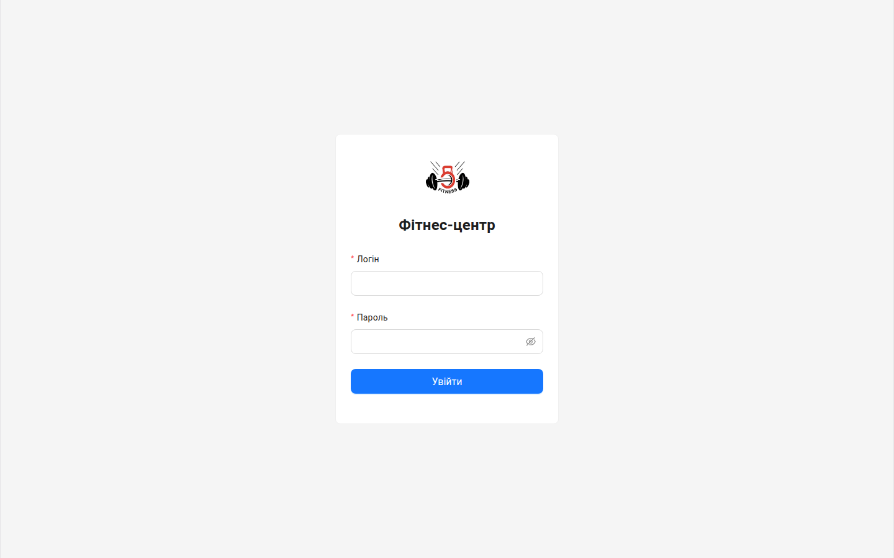
http://192.168.1.10).Важливо: не передавайте пароль колегам. Кожен працює під своїм обліковим записом — це потрібно для звітів і журналу дій.
На планшеті/телефоні меню сховане за кнопкою ☰ (зверху ліворуч). Натисніть її, щоб відкрити розділи.
Щоб вийти — кнопка «Вийти» внизу меню.
Набір розділів у меню залежить від ролі:
| Розділ | Ресепшн | Адміністратор |
|---|---|---|
| Ресепшн, Клієнти, Продаж, Документи продажів, Повернення, ПРРО, Підсумки зміни | ✅ | ✅ |
| Товари, Постачальники, Прихід товару, Складські документи | — | ✅ |
| Тарифи абонементів, Співробітники, Звіти, Налаштування | — | ✅ |
| Про програму | ✅ | ✅ |
Якщо потрібного розділу немає — зверніться до адміністратора: у вас роль Ресепшн.
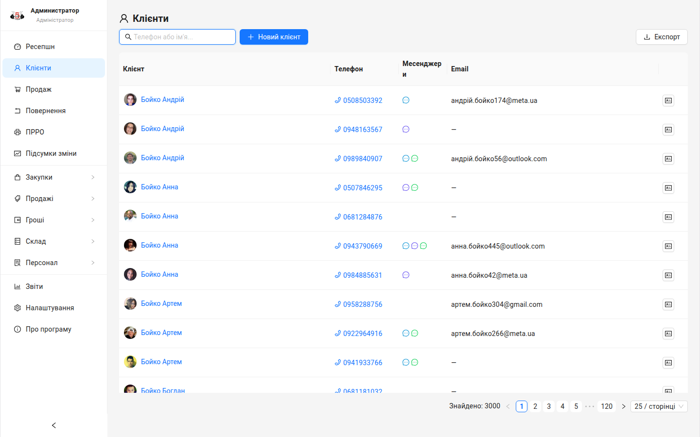
Розділ: «Клієнти»
0XXXXXXXXX (10 цифр).Клієнта також можна створити «на льоту» під час видачі ключа.
Щоб завантажити довідник клієнтів із файлу, натисніть «Імпорт» (поруч із кнопкою «Експорт»).
Клієнти зіставляються за телефоном: наявний клієнт з таким телефоном оновлюється, новий — створюється.
📎 Готовий зразок файлу:
docs/examples/клієнти_приклад.xlsx(а такожклієнти_з_помилками.xlsx— щоб побачити, як виглядає попередній перегляд із проблемними рядками).
Розділ: «Ресепшн» → велика кнопка «Видати ключ»
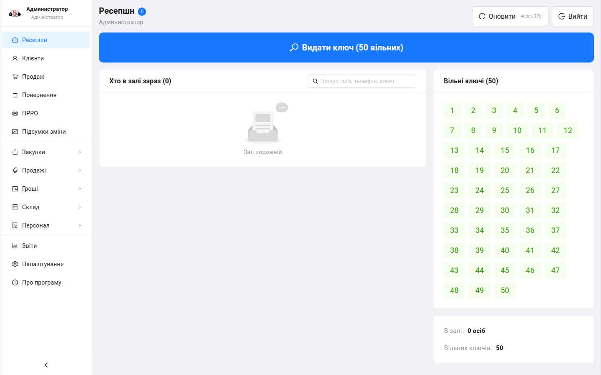
Вікно видачі ключа з вибраним клієнтом і перевіркою абонемента:
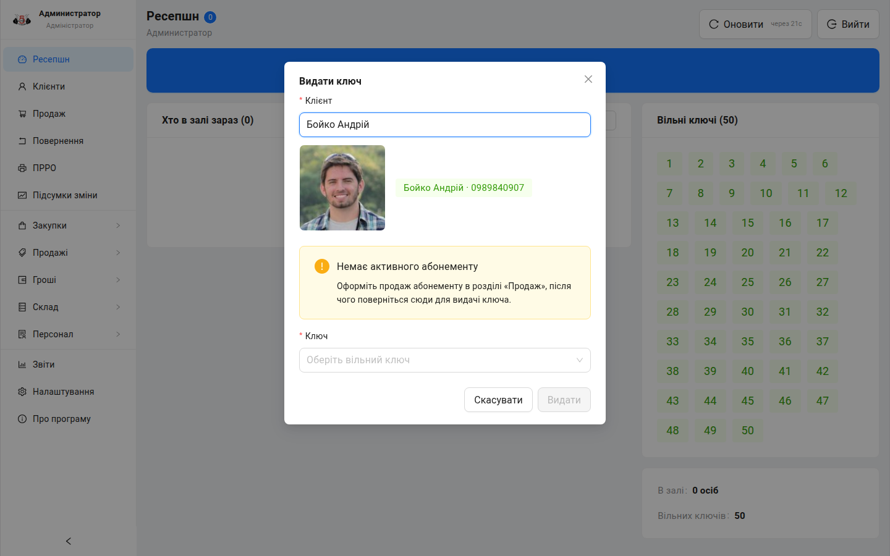
Клієнт з’явиться у списку «Хто в залі», час входу зафіксується автоматично.
Без активного абонемента кнопка «Видати» неактивна.
Розділ: «Ресепшн»
Щоб прийняти ключ:
Відвідування закриється, ключ стане вільним.
Список автоматично оновлюється кожні 30 секунд. Кнопка «Оновити» робить це негайно.
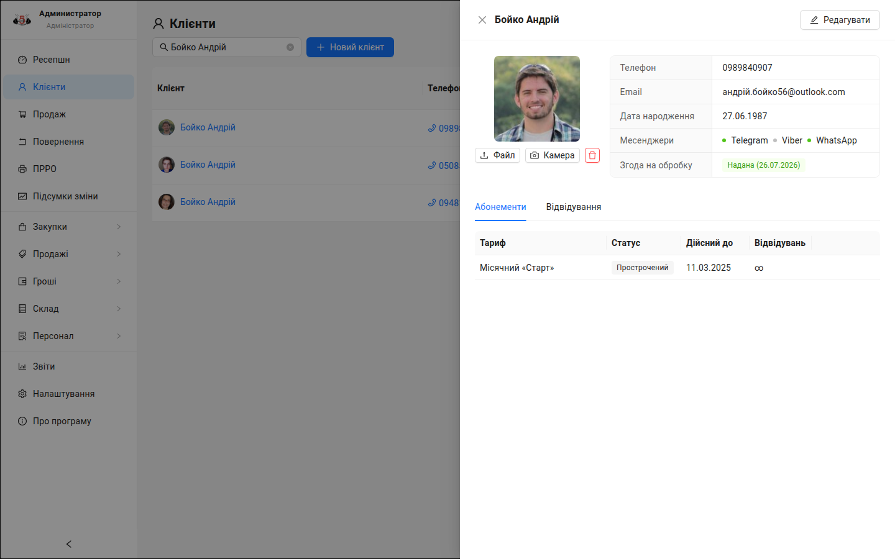
Відкривається кліком на ім’я клієнта (у «Клієнтах» або в «Хто в залі»).
Що показує картка:
Редагувати дані: кнопка «Редагувати» вгорі картки → змініть поля → «Зберегти».
Статуси абонемента:
| Статус | Значення |
|---|---|
| 🟢 Активний | Діє, можна відвідувати зал |
| 🔵 Заморожений | Тимчасово призупинений |
| ⚪ Прострочений | Закінчився термін дії |
| 🟠 Вичерпаний | Використані всі відвідування |
У картці клієнта, у блоці фото:
Фото відображається у списках, у «Хто в залі» та під час видачі ключа — щоб швидше впізнавати клієнтів.
Розділ: «Продаж»
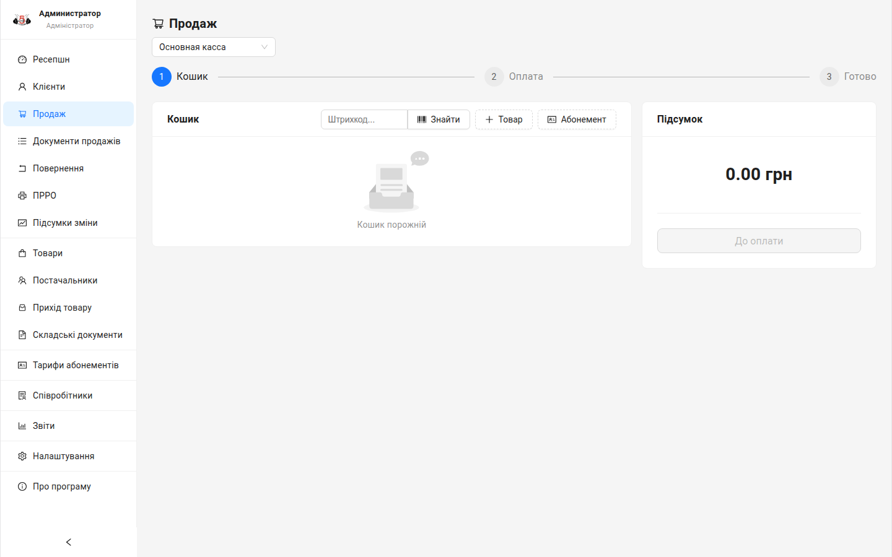
Після проведення продажу абонемент активується автоматично. Далі можна видати ключ.
Один клієнт діє на весь чек — його ім’я показане у заголовку кошика. Прибрати клієнта — хрестик на його позначці.
Розділ: «Клієнти» → картка клієнта → вкладка «Абонементи»
Заморозка — це пауза абонемента. Вона потрібна, коли клієнт певний час не може відвідувати центр (відпустка, відрядження, хвороба, травма), щоб оплачені дні не «згоряли» даремно.
Що дає заморозка на практиці:
Приклад. Абонемент діє до 30.09. Клієнт заморозив його 10.09, а розморозив 20.09 — тобто був на паузі 10 днів. Після розморозки дата завершення автоматично зсунеться на 10.10 (30.09 + 10 днів).
⚠️ Важливо: термін продовжується у момент розморозки, а не заморозки. Поки абонемент «висить» замороженим, дата завершення ще стара — не лякайтеся, вона перерахується, коли ви натиснете «Розморозити».
Для чого це бізнесу: клієнт не платить за дні, якими не міг скористатися (менше суперечок і повернень), і не кидає абонемент через відпустку чи хворобу, а просто ставить його «на паузу».
Кнопки «Заморозити» / «Розморозити» знаходяться у рядку абонемента на вкладці «Абонементи» картки клієнта (див. скриншот у Блоці 4).
Заморозити:
Розморозити:
Ліміти задає тариф (див. Блок 21):
- скільки разів можна заморожувати;
- сумарна кількість днів заморозки за весь час дії абонемента.
Якщо тариф взагалі не передбачає заморозку — кнопка не спрацює. Якщо вичерпано ліміт заморозок або перевищено сумарний ліміт днів — система попередить і не дасть заморозити / розморозити.
Продовження оформлюється як новий продаж абонемента тому самому клієнту:
Термін/відвідування додадуться згідно з правилами тарифу.
Розділ: «Продаж» (той самий екран, що й для абонемента — див. Блок 6)
Додати товар у кошик можна трьома способами:
У кошику можна змінювати кількість або видаляти позиції (кошик 🗑). Коли всі позиції додані — натисніть «До оплати».
Якщо для товару не встановлено ціну — система попередить, і його не можна продати, доки ціну не задано (адміністратор, розділ «Товари»).
Розділ: «Продаж» → крок «Оплата»
Якщо чек не фіскалізовано (проводили як звичайний) — на екрані «Готово» буде кнопка «Фіскалізувати», щоб провести його через ПРРО пізніше.
Готівка автоматично округлюється за налаштованим кроком округлення. Округлення видно в чеку окремим рядком.
Зміну відкривати вручну не обов’язково. Якщо на момент фіскального чека зміну ПРРО закрито, вона відкриється автоматично разом із першим фіскальним чеком. При автоматичному відкритті також виконається авто-внесення готівки з налаштувань каси. Тобто перший фіскальний продаж дня можна провести, не заходячи в розділ «ПРРО».
Розділ: «Повернення»
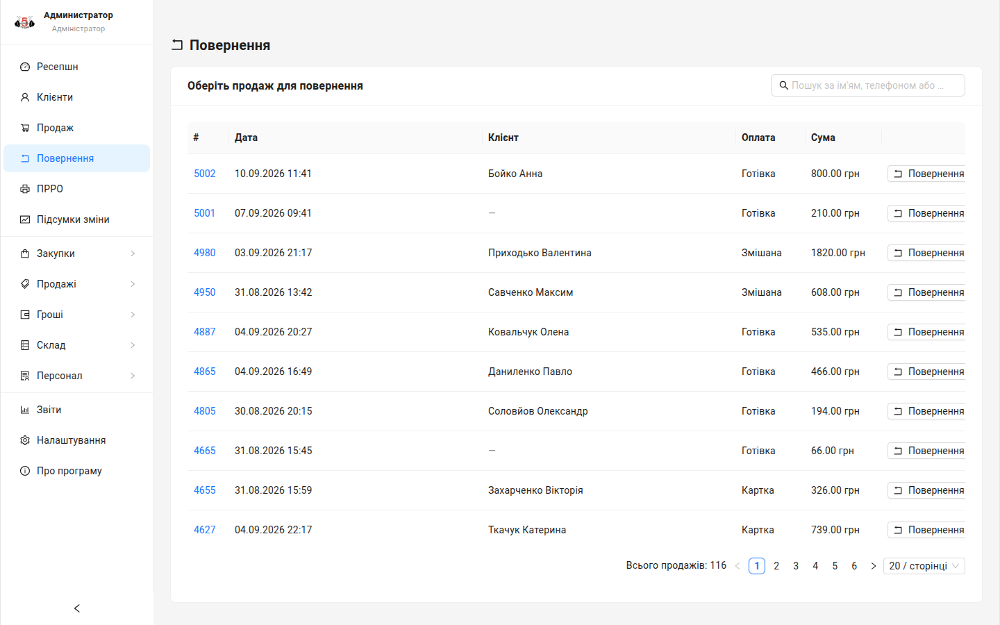
Гроші повертаються тим самим способом, яким платили (якщо в налаштуваннях не ввімкнено «Повернення завжди готівкою»).
Повернення виконує адміністратор.
Розділ: «Документи продажів»
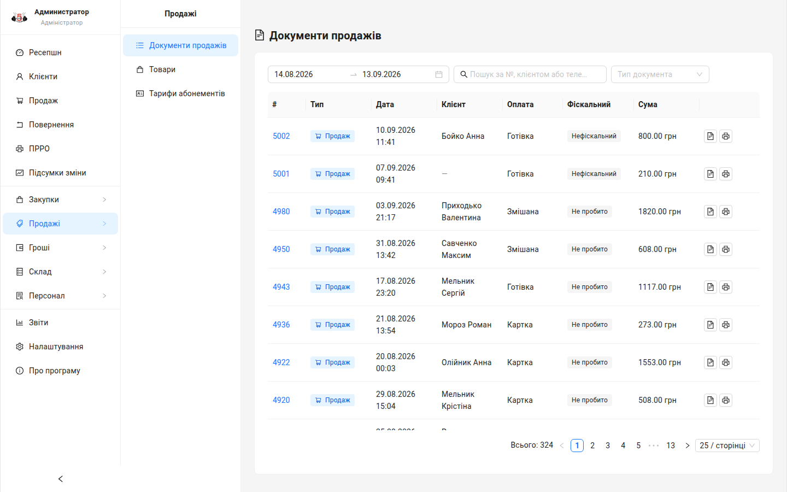
Розділ: «Підсумки зміни»
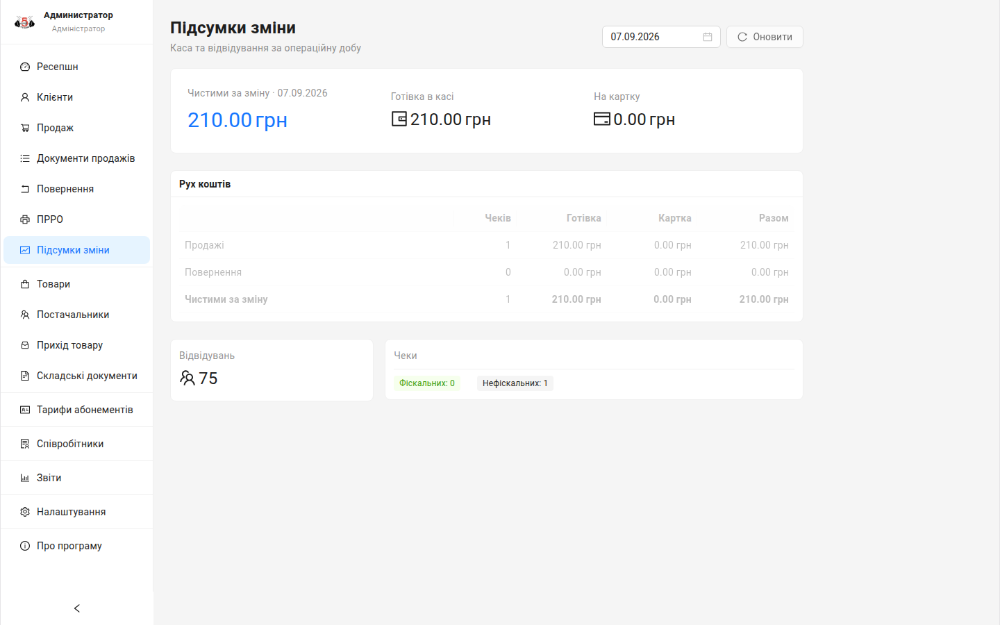
Показує касу та відвідування за обрану операційну добу (виберіть дату вгорі):
Кнопка «Оновити» перезавантажує дані.
Розділ: «ПРРО»
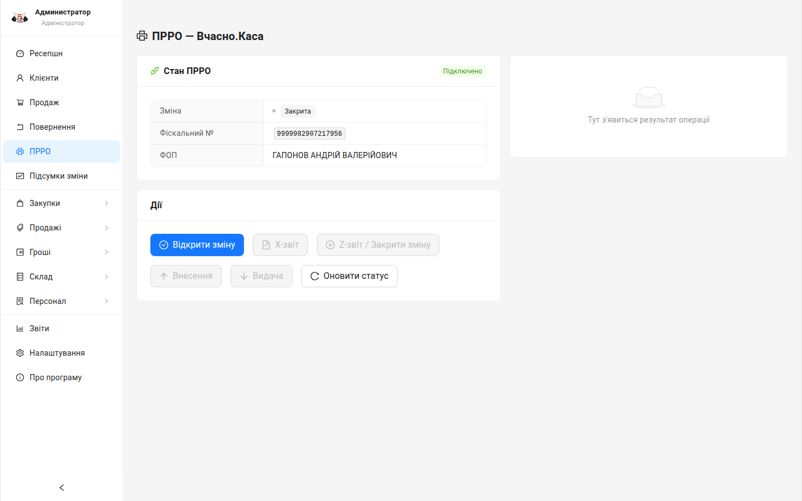
Угорі — картка «Стан ПРРО»: підключення до каси, чи відкрита зміна, тривалість, фіскальний номер, ФОП.
Дії (виберіть касу, якщо їх кілька):
Результат операції (зокрема зображення звіту) з’явиться праворуч, його можна «Друкувати».
Ручне відкриття не обов’язкове. Якщо зміну закрито, вона відкриється сама з першим фіскальним чеком (див. Блок 10) — разом із авто-внесенням. Кнопка «Відкрити зміну» потрібна, коли хочете відкрити зміну заздалегідь (наприклад, зробити внесення розмінного фонду до перших продажів).
Порядок дня: зранку — «Відкрити зміну» (за потреби); протягом дня — фіскальні продажі; у кінці — «Z-звіт / Закрити зміну». Фіскальну зміну зазвичай відкриває/закриває адміністратор.
Розділ: «ПРРО» (зміна має бути відкрита)
Обидві операції проходять через ПРРО, результат показується на панелі праворуч.
Розділ: «Звіти» (адміністратор)
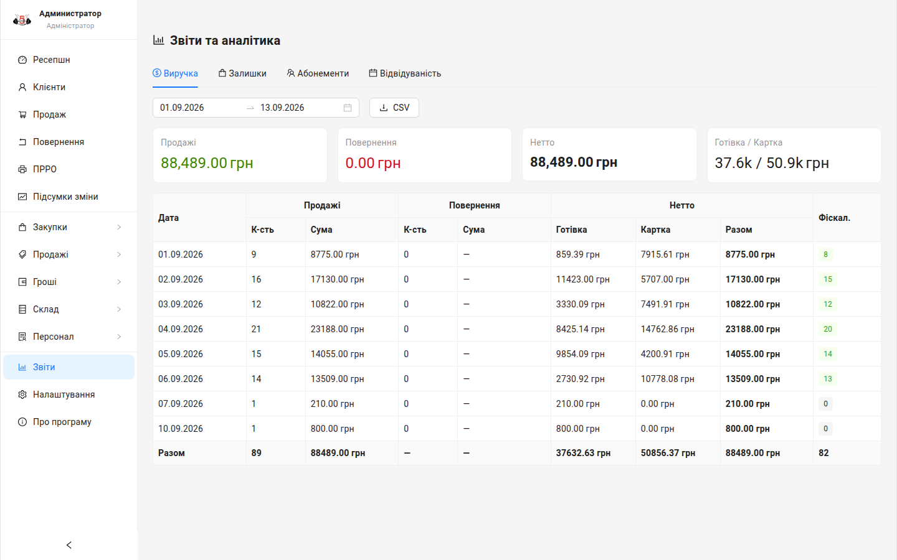
Доступні звіти (вкладки):
Звіти можна вивантажувати (експорт) — кнопка вивантаження у відповідній вкладці.
Розділ: «Товари» (адміністратор)
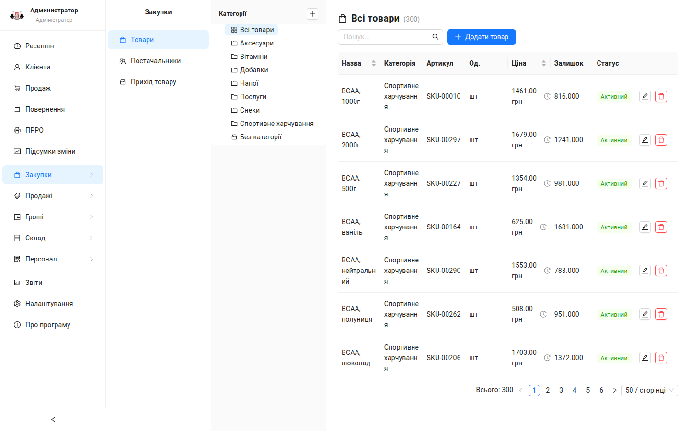
Сканер штрихкодів у розділі «Товари» працює у двох режимах:
Ціну товару обов’язково задати — без неї товар не можна продати.
Кнопка «Імпорт» дозволяє завантажити довідник товарів із файлу .xlsx.
Товари зіставляються за артикулом (або, якщо його немає, — за назвою). Для нового товару ціна обов’язкова. Залишки на складі імпорт не змінює — вони ведуться через прихід і складські документи.
📎 Готовий зразок файлу:
docs/examples/товари_приклад.xlsx.
Розділ: «Постачальники» (адміністратор)
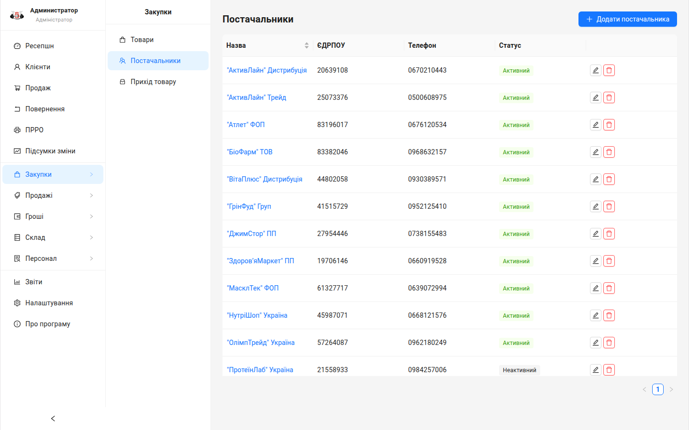
Постачальники використовуються під час приходу товару.
Розділ: «Прихід товару» (адміністратор)
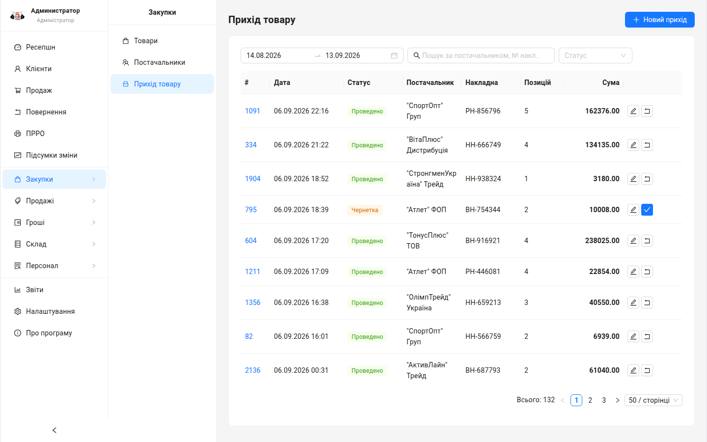
Проведення можна скасувати («Скасувати проведення») — залишки повернуться назад.
Розділ: «Складські документи» (адміністратор)
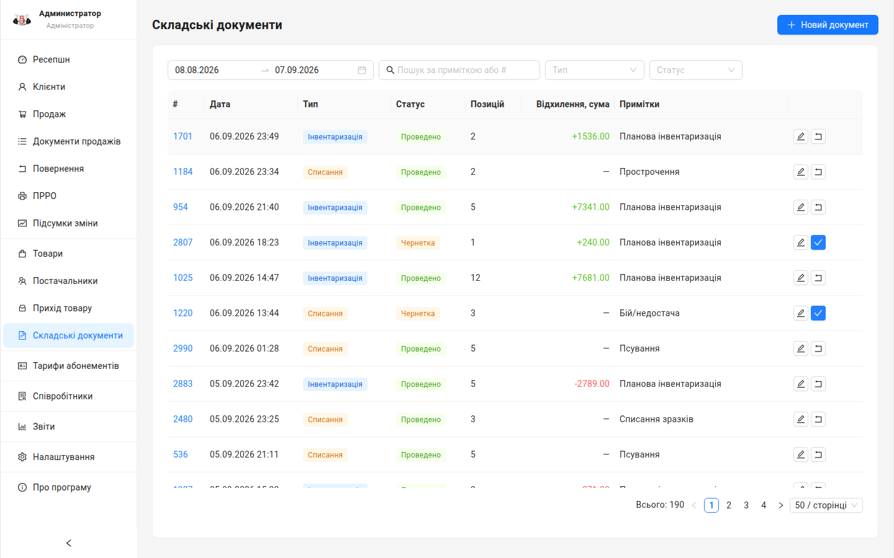
Типи документів:
Порядок: створити документ → додати товари → «Провести». За потреби — «Скасувати проведення».
Розділ: «Тарифи абонементів» (адміністратор)
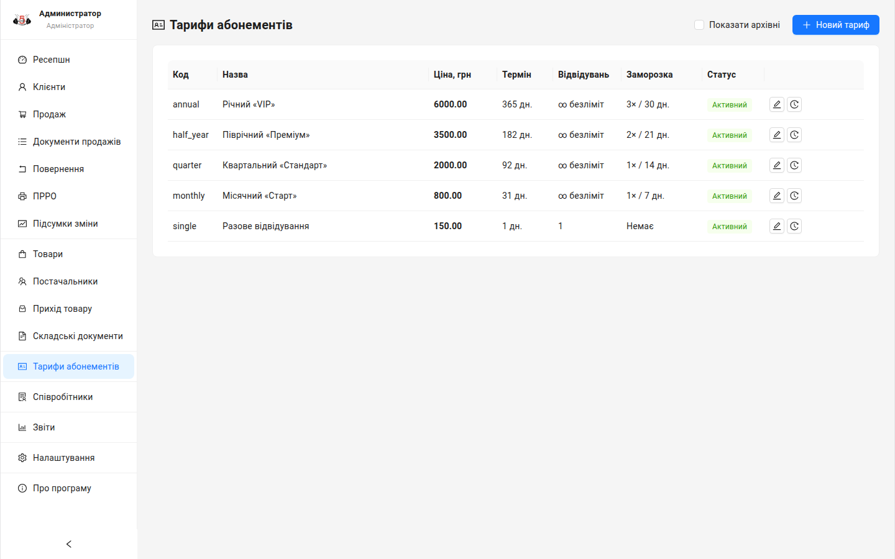
Параметри тарифу:
Неактивні (архівні) тарифи не показуються під час продажу.
Розділ: «Співробітники» (адміністратор)
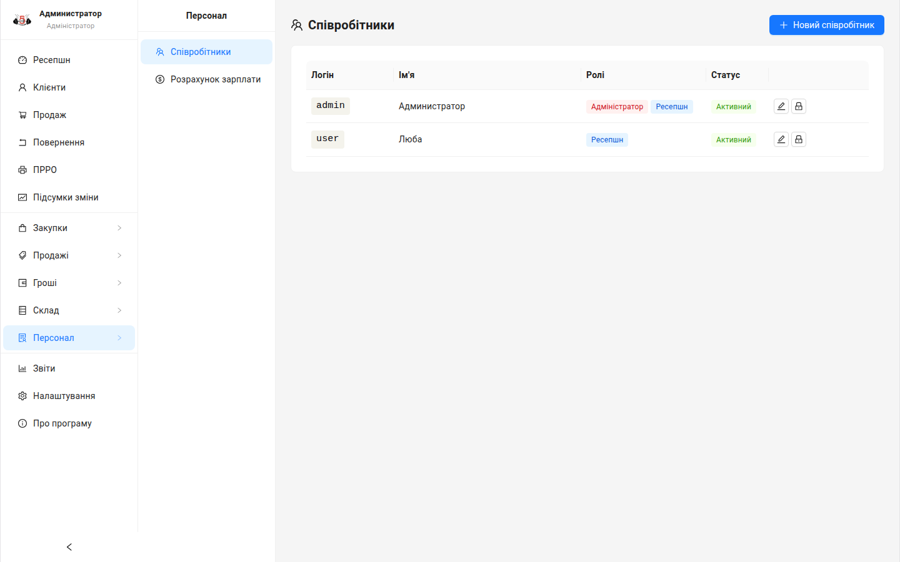
Неактивний співробітник не може увійти в систему.
Розділ: «Персонал» → «Розрахунок зарплати» (адміністратор).
Модуль рахує зарплату співробітників за обраний період на сервері за поточним методом нарахування. Метод — спільний для всього закладу і задається в Налаштуваннях; а конкретні ставки (оклад, відсотки) задаються індивідуально кожному співробітнику.
Методи нарахування:
| Метод | Як рахується |
|---|---|
| Оклад | Фіксована сума за період. |
| Відсоток від продажів | Відсоток від особистих продажів співробітника за період. |
| Відсоток за групами товарів + абонементи | Свій відсоток за кожною групою товарів плюс окремий відсоток за продані абонементи. |
| Оклад + відсоток від продажів | Фіксований оклад плюс відсоток від особистих продажів. |
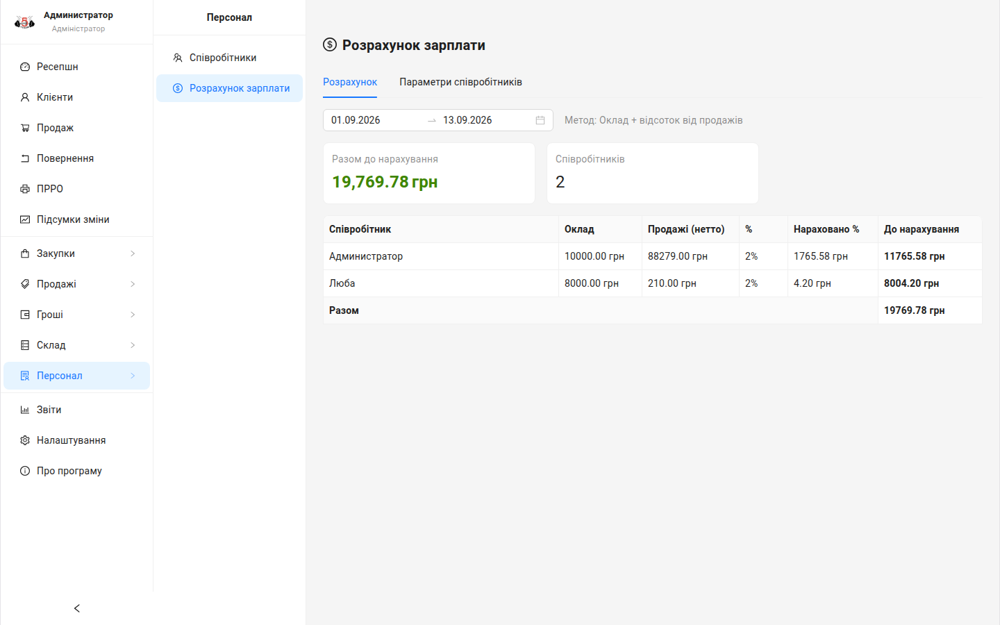
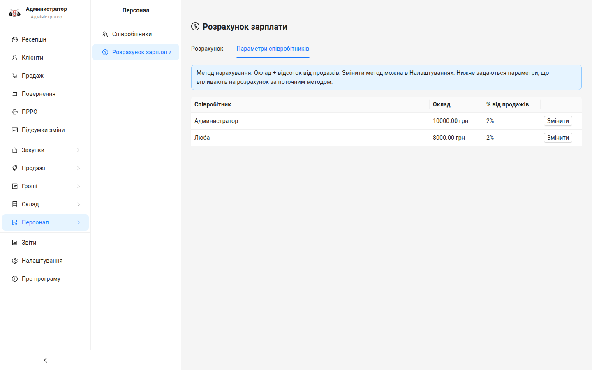
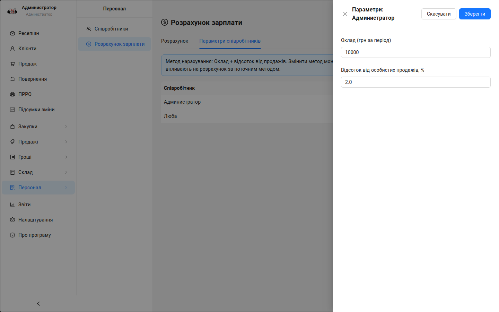
Поля панелі залежать від методу:
Натисніть «Зберегти», щоб застосувати зміни.
Ставки задаються окремо кожному співробітнику, тому двоє людей на одному методі можуть мати різні оклад і відсотки.
Розділ: «Гроші» → «Рух грошей» (адміністратор).
Ручний журнал приходу й витрат за статтями — управлінська каса закладу. Тут фіксуються операції, яких немає у продажах: внесок засновника, оренда, комунальні, зарплата, закупівля товару, реклама тощо.
Важливо. Це окремий управлінський облік, не пов’язаний з фіскальними операціями ПРРО. Внесення та видача готівки на касі ПРВ (див. Блок 15) сюди не потрапляють.
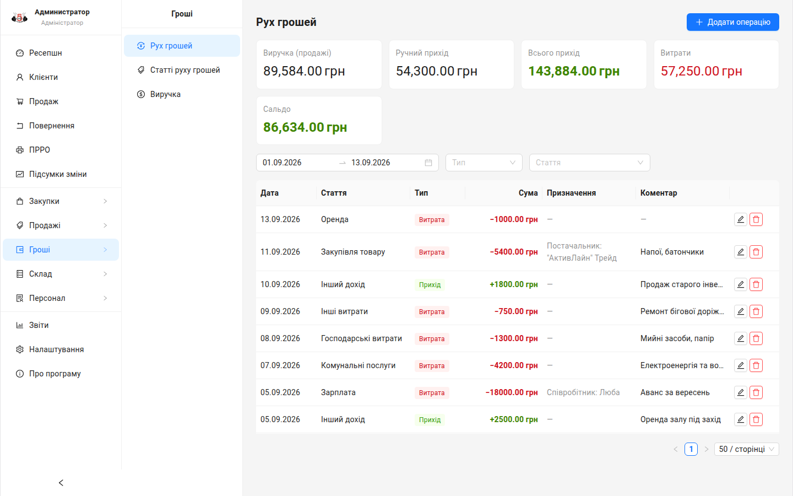
Натисніть «Додати операцію»:
Операції можна редагувати та видаляти кнопками у рядку.
Розділ: «Гроші» → «Статті руху грошей» (адміністратор).
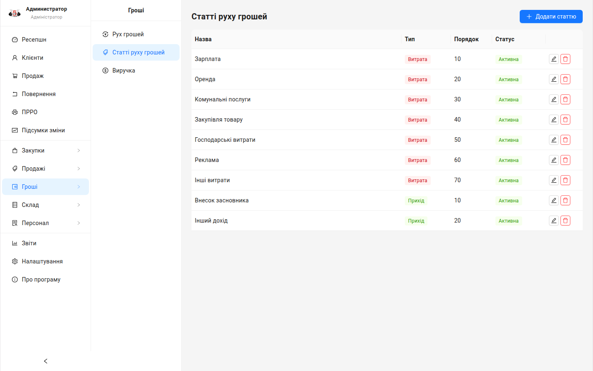
Довідник статей приходу й витрат. Одразу після встановлення доступні типові статті (внесок засновника, інший дохід, зарплата, оренда, комунальні послуги, закупівля товару, господарські витрати, реклама, інші витрати), їх можна змінювати й доповнювати.
Розділ: «Налаштування» (адміністратор).
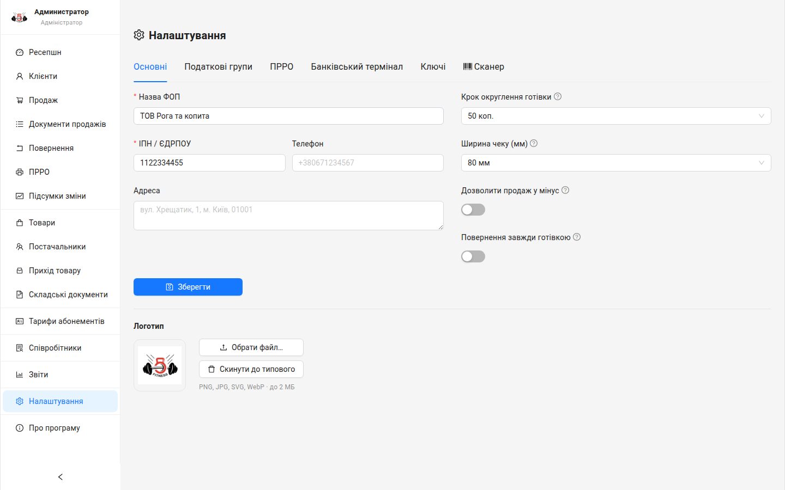
Вкладки:
На вкладці «ПРРО» видно таблицю кас. Щоб додати нову — натисніть «Додати касу», щоб змінити наявну — натисніть олівець ✏️ у рядку каси. Відкриється картка:
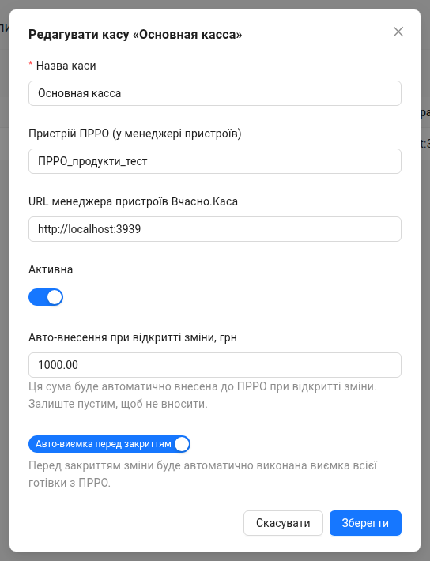
Поля картки:
| Поле | Що це і навіщо |
|---|---|
| Назва каси | Внутрішня назва (напр. «Каса №1», «Основна каса»). Її бачить касир при виборі каси в «Продажу» та «ПРРО». Обов’язкове поле. |
| Пристрій ПРРО (у менеджері пристроїв) | Ім’я пристрою-реєстратора у Вчасно.Каса (Device Manager). Саме за цим ім’ям система знаходить, через який ПРРО фіскалізувати чеки цієї каси. Має точно збігатися з назвою пристрою в менеджері. |
| URL менеджера пристроїв Вчасно.Каса | Адреса локального менеджера пристроїв (напр. http://localhost:3939), через який іде зв’язок із ПРРО і терміналом. |
| Активна | Вмикає/вимикає касу. Тільки активні каси доступні для вибору в «Продажу» та «ПРРО». Неактивну касу не видно касиру, але її історія зберігається. |
| Авто-внесення при відкритті зміни, грн | Сума розмінного фонду, яка автоматично вноситься до ПРРО при відкритті зміни (у т.ч. при автовідкритті першим фіскальним чеком). Зручно, щоб щоранку не робити внесення вручну. Залиште пустим — внесення не виконуватиметься. |
| Авто-виємка перед закриттям зміни | Якщо увімкнено — перед Z-звітом автоматично вилучається вся готівка з ПРРО (інкасація). Зміна закривається з нульовим залишком готівки, окрема ручна виємка не потрібна. |
Що це дає на практиці: одна каса в програмі = один реєстратор у Вчасно.Каса. Правильно заповнені «Пристрій ПРРО» і «URL менеджера» — це те, завдяки чому кнопки «Провести фіскально», «Відкрити/закрити зміну», «Внесення/Видача» дійсно проходять через державний ПРРО. А поля авто-внесення та авто-виємки автоматизують щоденну рутину касира на відкритті та закритті зміни (див. Блок 14).
Банківський термінал (еквайринг) для цієї ж каси налаштовується окремо — на вкладці «Банківський термінал» (пристрій термінала, merchant ID).
Кожен термінал прив’язаний до конкретної каси. На вкладці «Банківський термінал» знайдіть потрібну касу і натисніть олівець ✏️ — відкриється картка:
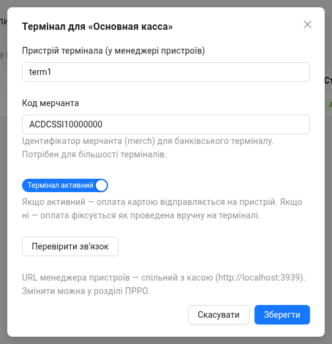
Поля картки:
| Поле | Що це і навіщо |
|---|---|
| Пристрій термінала (у менеджері пристроїв) | Ім’я пристрою-термінала у Вчасно.Каса (Device Manager). За ним система знаходить, на який фізичний термінал відправити оплату картою. |
| Код мерчанта | Ідентифікатор мерчанта (merch) банківського термінала. Потрібен для більшості терміналів — без нього оплата може не пройти. |
| Термінал активний (перемикач) | Головний параметр режиму роботи (див. нижче). Термінал активний — оплата відправляється на пристрій автоматично; Ручний режим — оплату проводять руками на самому терміналі, а програма лише фіксує факт. |
| «Перевірити зв’язок» | Кнопка перевірки: система пінгує термінал через менеджер пристроїв і показує, чи є зв’язок. Натисніть після налаштування, щоб переконатися, що все працює. |
URL менеджера пристроїв — спільний із касою. Окремо для термінала його не задають: береться той самий, що вказаний у картці каси ПРРО. Змінити адресу можна лише там.
Два режими роботи (перемикач «Термінал активний»):
Що це дає: інтеграція термінала прибирає ручне введення суми на пристрої та звіряння — касир натискає «Оплата карткою», решту робить система. А режим «Ручний» дозволяє продовжувати роботу навіть без інтеграції.
| Повідомлення / ситуація | Причина | Що робити |
|---|---|---|
| Кнопка «Видати» неактивна | У клієнта немає активного абонемента | Спершу продайте абонемент, потім видайте ключ |
| «Немає вільних» на кнопці видачі | Усі ключі видані | Прийміть повернення ключів у «Хто в залі» |
| «Телефон вже зареєстровано» | Клієнт уже є в базі | Знайдіть його через пошук за телефоном |
| «Для товару не встановлена ціна» | Товару не задано ціну | Адміністратор задає ціну в «Товари» |
| «Кошик порожній» | Не додано жодної позиції | Додайте товар або абонемент |
| «Для продажу абонементу потрібно обрати клієнта» | Не вибрано клієнта | У вікні абонемента виберіть клієнта |
| Помилка фіскалізації | ПРРО/Вчасно.Каса недоступна | Проведіть без фіскалізації, пізніше натисніть «Фіскалізувати»; перевірте стан у «ПРРО» |
| Помилка терміналу | Термінал не відповідає | Перевірте підключення; за потреби прийміть оплату готівкою |
| «Немає активних кас» у ПРРО | Каса не додана/неактивна | Адміністратор додає касу в «Налаштування → ПРРО» |
| Не працює сканер | Сканер не налаштовано | Перевірте у «Налаштування → Сканер» («Перевірка сканера») |
Питання щодо роботи системи — до адміністратора. Технічні питання (мережа, обладнання, ПРРО) — до вашого техніка/системного адміністратора.